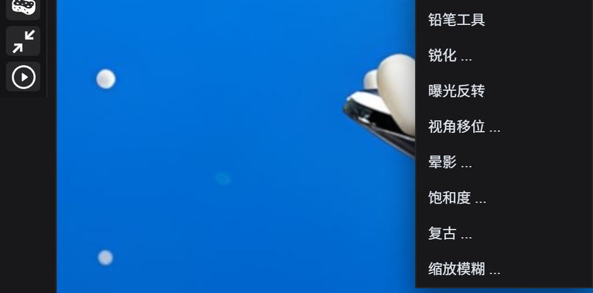

锐化模糊照片（又不做出脆边）
锐化不会「增加细节」。它只是把已经存在的边缘对比拉高，让眼睛觉得边界更清楚。这个定义同时说明了它能做什么，也说明了为什么过度锐化比原本的模糊更难看：推到一定程度，每条边都会长出一圈画面里从来没有的亮暗描边。
这个工具只有一个控件：【特效】→【锐化】，因子从 1 到 10（步进 0.1，默认 3）。只有一个数，所以结果几乎完全取决于你把它放在流程的哪一步、以及在什么缩放下判断。

三种模糊，只有一种能救
| 原因 | 长什么样 | 锐化有用吗 |
|---|---|---|
| 轻微失焦或镜头偏软 | 整幅均匀发虚 | 有点用。因子 2–4 能把「看起来的清晰度」补回来 |
| 缩小之后 | 细纹理被压平 | 有用。调整大小里自带锐化勾选就是干这个的 |
| 运动模糊、主体没对上焦 | 沿一个方向拖影，或一块清楚一块糊 | 没用。锐化加的是对比，造不出运动方向 |
主体沿一个轴糊掉了，任何因子都救不回来——你只会得到一张拖影依旧、边缘却变硬的图，比一张老老实实承认模糊的图更糟。早点认出这一点，能省下二十分钟找滑杆。
顺序比数值重要
高 ISO 照片先锐化，噪点会被放大成一坨一坨。先跑 【特效】→【降噪】，指数取低（10–20），再锐化。这两个效果是互相拆台的，谁先做，谁的结果留下来。
图必须变小的话，用 【图片】→【调整大小】，模式 Lanczos，勾 锐化。缩小一定会让画面变软，这一道在重建像素的同一刻补回来。缩完再单独锐化效果类似，但在调整大小里一次做完，能少叠一道。
锐化要在「这张图最终被看的尺寸」上做。3000 像素下调好的因子，到 1200 像素会显得没锐；在缩略图上调好的，放到原尺寸像砂纸。顺序是：先缩到最终尺寸，再锐化，再导出，之后不要再重采样。
因子怎么取
- 1–2： 几乎看不出来。适合本来够锐、只是缩放时掉了一点边缘的照片。
- 2–4： 绝大多数照片的工作区间。因子 3 的感觉是「这文件本来就这样」，而不是「这图修过」。
- 4–6： 屏幕、缩略图、社交裁切能明显看出更锐。高反差边缘开始出现描边——天空压屋檐、纸上的文字。
- 7–10： 只用于抢救。细节发脆、皮肤纹理变砂砾，JPEG 压缩痕也会跟着被放大。
判断要在 100% 缩放 下做——【视图】→【缩放】→【原始大小】。适应窗口里因子 8 看着还不错，是因为显示时像素已经被平均过了，而这个设置恰好就是毁掉打印的那一档。
只锐化需要锐化的地方
通常只有局部需要：人物眼睛、产品边缘、标签上的字。全局锐化会连背景一起拉，而描边最容易在背景上露出来。
复制图层（【图层】→【复制】），对副本加锐化，再用 橡皮擦 配大号软笔刷，把不需要效果的地方擦掉。擦开的地方露出下面没动过的图层。等于不用蒙版也能做出一张锐化遮罩。
锐化做不到的事
- 补回没对准的焦。 这里没有反卷积算法，拍虚的眼睛还是虚的。
- 修运动模糊。 拖影是信息丢失，不是对比不足。
- 让放大过的图看起来像原生的。 放大是凭空造像素，锐化这些造出来的像素，只会让插值痕迹更明显。
- 修 JPEG 块状痕。 锐化会把 8×8 的方格放大。先降噪，或者接受一张偏软的图。
一条能照抄的流程
降噪（10–20）→ 缩到最终尺寸并勾锐化 → 因子 2–4 锐化 → 100% 检查 → 导出。任何一步之后发现比原图更难看，就撤销停下。撤销不要钱，已经发出去的脆边文件要钱。
常见问题
因子拉满还是很糊，为什么？
锐化提高的是边缘对比，它不重建丢失的细节。如果模糊来自没对准焦或曝光期间的运动，信息根本不在文件里，任何因子都造不出来。拉满通常只会让情况更糟：给一个本来就在拖影的主体加一圈描边。
应该先锐化还是先缩尺寸？
先缩，更好的是在缩的时候一起做。用 Lanczos 模式加勾锐化定下最终尺寸，还觉得不够再用【特效】→【锐化】小因子补一次。先锐化再缩图，效果会被重采样平均掉，等于白做。
高反差边缘的描边怎么避免？
降低因子；或复制图层、只锐化副本，再把背景部分擦掉；图本身有噪点就先降噪。描边最容易长在极亮边挨着极暗边的地方——天空压屋檐、黑底白字——导出前在 100% 下专门看这几处。
相关教程推荐
找一张偏软的照片，在 100% 缩放下用因子 3 锐化，再复制一层推到 8，对比描边的差别。